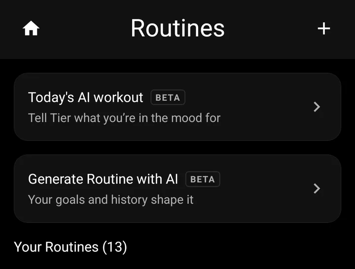
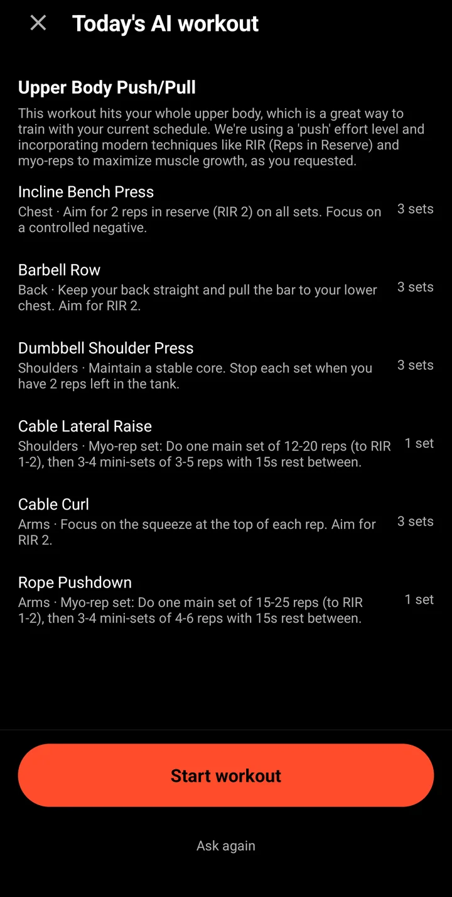

A program written from your own log.
Tier’s AI starts from the sets you’ve logged and the goals you’ve set. It’s in beta, and nothing it writes is saved until you say so.
Get Tier on iPhoneGenerate a routine in three picks
Choose how many days a week you train, what you’re training for, and up to three areas to focus on. Tier fills in the rest from your goals and history: named days, exercises from Tier’s library, sets and rep ranges.
It opens in the routine builder, ready to edit. Change anything, then save it.

Today’s workout, on request
Not feeling your plan? Tell Tier what you’re in the mood for and get a session for today, shaped by what you’ve been training, ready to start.

A coach that has read your log
Ask why your bench has stalled or what to do next, and the answer uses your real numbers: how often you train, what’s moving and what isn’t. Each week you can also get a short read on how your training is going.
A second opinion on your goals
Set a target lift with a deadline and ask the coach whether you’re on pace. It tells you where you stand and what to adjust.
Free to try, more with TIER MAX
Every account can use the AI features. TIER MAX lifts the free limits, for lifters who plan with it every week.
Let your log write the plan.
Get Tier on iPhoneFree to start.